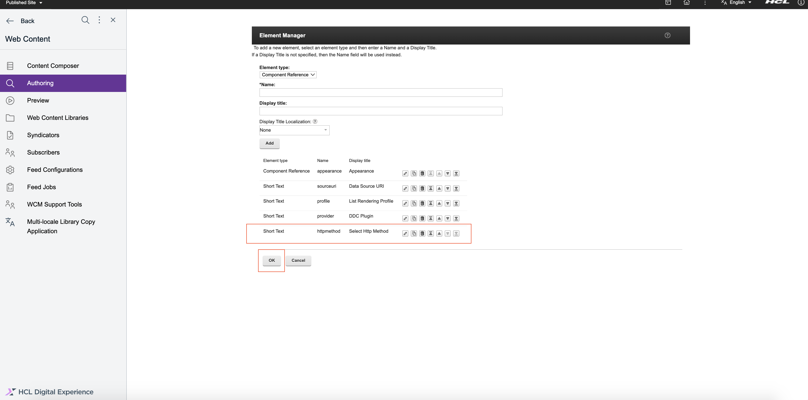
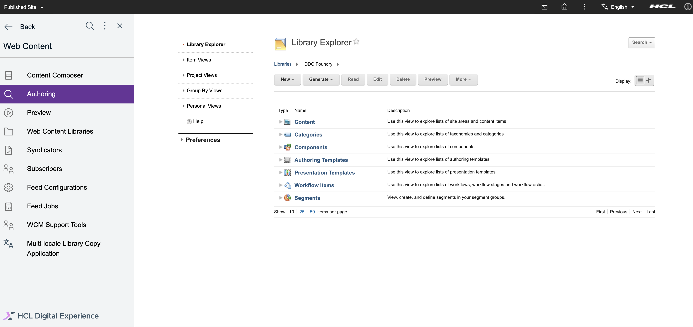
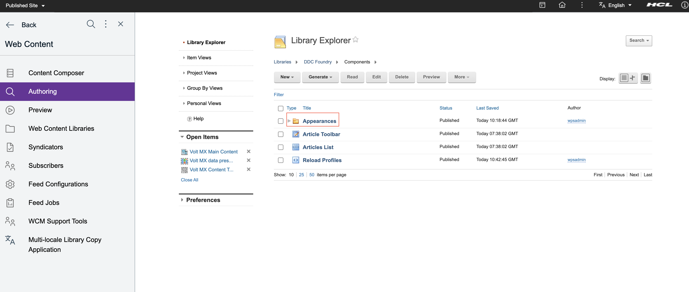
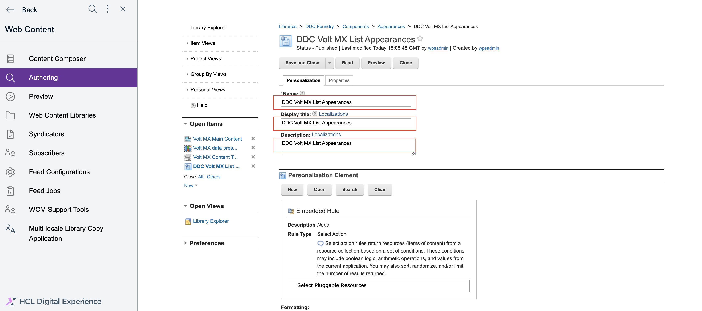
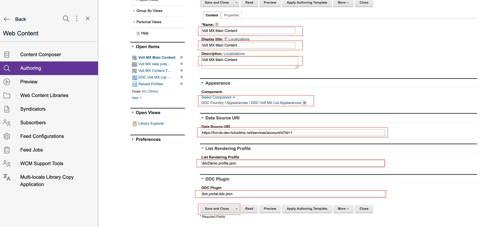
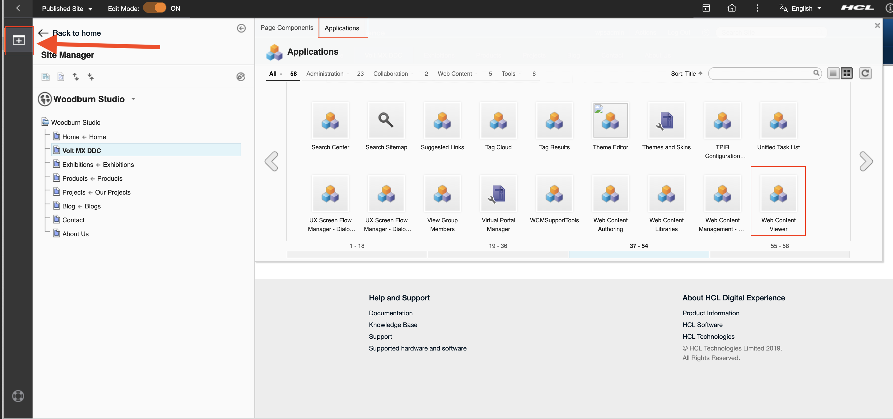

Connecting to HCL Volt MX Foundry through Digital Data Connector (DDC)
This section provides the steps on using DDC for HCL Portal framework to integrate data from HCL Volt MX Foundry (integrated external data sources) on your portal pages by using HCL Web Content Manager presentation components.
Prerequisite
Ensure that the your Volt MX Foundry application is configured correctly according to this guide.
To learn how to manage your sites and applications as a business user, refer to the HCLSoftware U course DX Integration with HCL Volt MX for Business Users.
To learn further customization for integration as a developer, refer to the HCLSoftware U course DX Integration with HCL Volt MX for Developers.
Creating a mapping for the DDC plug-in for the list-rendering profile
This section describes how to define the set of attributes available in the beans that are contained in bean lists that a DDC plug-in generates in list-rendering profile.
For more information, see Technical concepts | HCL Digital Experience.
The following API end point and response are used to create this sample document:
-
Sample API end point for GET

-
Sample API end point for POST

Creating the list-rendering profile
-
Log in to the WAS console.
-
Click Resources from side navigation. Then, click Resource Environment, then Resource environment providers.
-
From the list of resources, find WP ListRenderingProfileService and click.
-
Click Custom properties From the Additional Properties on right side.
-
Click on New and add your unique profile (e.g. ddcDemo) and its properties by entering name-value pairs like in the sample below. Click Apply then OK
Note
The mappings in the
ItemAttributesection map to the response output specified in your integration service.Name Value Type Description ddcDemo.Name ddcDemo.profile.json String The unique name of the list-rendering profile ddcDemo.BeanListProviderID ibm.portal.ddc.json String The name of the used DDC plugin ddcDemo.ItemAttribute.id id Integer This should be mapped to a unique identifier per record ddcDemo.ItemAttribute.fullname name String Mapping the name provided by your response output to fullname in the list-rendering profile ddcDemo.ItemAttribute.email email String Mapping a simple field ddcDemo.ItemAttribute.username username String Mapping a simple field ddcDemo.ListItemSelection . String Provides the root node of the JSON response ddcDemo.Type BasicJSONSelection String Specifies that dot notation is being used by the plugin to access the fields Note
Instead of using the generic DDC json plugin you can create and deploy your own DDC plugin best suited for your business needs.
Note
{profile}.ItemAttribute.id(in this sampleddcDemo.ItemAttribute.id) is always required but it could point to any attribute from the external data source as long as it contains unique values. If your API does not provide any unique field, you might want to leverage the Postprocessor of HCL Volt MX to add a generated field. -
Review and save the changes in the master configuration.
-
Restart WAS server.
WCM presentation components
You may use an existing or new WCM library. For this example we have used a new library with default items such as site area and workflow. You will have to create WCM artifacts under 4 folders: Content, Components, Authoring Templates, and Presentation Templates.
Refer to Creating web content libraries for instructions on how to work with WCM libraries.
Creating a Presentation Template
Set the context of the DDC content.
Steps to create Presentation Template are as follows:
-
Create a new presentation template with suggested name
Volt MX data presentation templateand under presentation template options, click onInsert Tagbutton:
-
Select the type of tag to create, and then define parameters for the selected tag. You can then either copy and paste the tag into your design, or click
OKto insert the tag at the current cursor location.Sample Presentation Template Options -
[Plugin:ListRenderingContext action="set" attribute="source=[Element context='current' type='content' key='sourceuri']" profile="[Element context='current' type='content' key='profile']" extension-id="[Element context='current' type='content' key='provider']"][Component name="ddc foundry/appearances/ddc volt mx list appearances" resultsPerPage="" startPage=""]- Under
attribute, define the datasourceendpoint. The content field set in this example issourceuri, where you saved the endpoint in the content item. profilerefers to the List-Rendering Profile which was saved earlier in the WAS console. The content field that is set in this example is alsoprofile, which is saved in the content item with theddcDemo.profile.jsonvalue.extension-idrefers to the DDC plugin ID. The content field set in this example isprovider, which is saved in the content item with valueibm.portal.ddc.json.
- Under
-
Save and close.
Note
If you selected any other Resource Method (for example, POST from
Advanced>Front End API>Resource Method) while creating a new integration service with Volt MX Foundry, you might need the capability to submit data to the API which DDC will try to parse as sourceParams. In that case, you must include that in your Presentation Template.Sample Presentation Template Options - with params
[Plugin:ListRenderingContext action="set" attribute="source=[Element context='current' type='content' key='sourceuri']" attribute="sourceParams=[Element context='current' type='content' key='params']" profile="[Element context='current' type='content' key='profile']" extension-id="[Element context='current' type='content' key='provider']"][Component name="ddc foundry/appearances/ddc volt mx list appearances" resultsPerPage="" startPage=""]- Under
attribute, define the datasourceParams. The content field set in this example isparams, which is saved in the content item.

- Under
Creating a Content Template
Under Authoring Templates, create a Content Template.
-
Click on
Newbutton. Then, clickAuthoring Template, thenContent Templatecomponent
-
Add
Name,Display titleandDescriptionwith suggested nameVolt MX Content Template. Once you have created your presentation template, you have to set this as the default presentation templateVolt MX data presentation template. -
Click on
Manage Elementand add the following elements to the content template as follows.Element type Name Display title Component Reference appearance Appearance Short Text sourceuri Data Source URI Short Text profile List Rendering Profile Short Text provider DDC Plugin 
Note
In case of GET resource method, adding httpmethod element is not necessary, by default, the connection is initially set to GET. But if you selected any other Resource Method (for example - POST from
Advanced>Front End API>Resource Method) while creating a new integration service with Volt MX Foundry, then you need to add another element httpmethod. This element (httpmethod) can be added as Short Text, Text, or OptionSelection. A content created from this content template can then load and render data from data sources using other resource methods. Leaving the optional httpmethod field value blank or empty when creating your content, which is based on the content template, would still have the connection fallback to GET.Element type Name Display title Short Text httpmethod Select Http Method 
-
Click on
Default Content Propertiesand addExpress workflow. -
Save and close.
Note
If you selected any other Resource Method (for example, POST from
Advanced>Front End API>Resource Method) while creating a new integration service with Volt MX Foundry, you might need the capability to submit data to the API which DDC will try to parse as sourceParams using the Presentation Template you created in the previous section. In that case, you must add a content field in your Content Template that will save this. It can have any name but for this example, we're using params.Element type Name Display title Short Text params Request Body 
Creating a List Appearance
-
Go to the Library Explorer. The following default items are available:
Content,Categories,Components,Authoring Templates,Presentation Templates,Workflow Items, andSegments.
-
Create an Appearances folder under Components. This is to ensure that your personalization components use the DDC selection rule. Select pluggable resources can be found easily in one place.

-
Under Appearances folder, create a new Personalization component.
-
Click
New>Component>Personalization.
-
Enter the name and title. Suggested name:
DDC Volt MX List Appearances
-
Under
Personalization Element, clickNew. As aNew Rule, instead ofSelect Web Content, click on theWeb Contentphrase and selectPluggable Resourcesand clickSave.
-
In the List Presentation Markup, add the following:
- Header:
<ul> - Result design:
<li>[AttributeResource attributeName="fullname" separator=","]</li> <li>[AttributeResource attributeName="username" separator=","]</li> <li>[AttributeResource attributeName="email" separator=","]</li> - Footer:
</ul>
Note
The
attributeNameused here is the last part of theitemAttributeyou have specified in your list rendering profile. For example,ddcDemo.ItemAttribute.fullname.
- Header:
-
Click
Save and Close.
-
Creating a Content item
-
Under your libraries, click
Content, then clickArticles, and create a new Content from the Content Template that you created earlier. -
Add
Name,Display title, andDescriptionwith suggested nameVolt MX Main Content, and in the content fields / elements, provide the following inputs:Content field title Value Appearance auto filled once you've chosen a component Data Source URI https://hcl-dx-dev.hclvoltmx.net/services/account/id?id=1 List Rendering Profile ddcDemo.profile.json DDC Plugin ibm.portal.ddc.json 
Note
If you selected any other Resource Method (for example - POST from
Advanced>Front End API>Resource Method) while creating a new integration service with Volt MX Foundry then you need to provide value for httpmethod. Also, the value of Data Source URI would be the POST URL endpoint in this case.Content field title Value Data Source URI https://hcl-dx-dev.hclvoltmx.net/services/account/id Select Http Method post -
Save and close.
Note
If you selected any other Resource Method (for example, POST from
Advanced>Front End API>Resource Method) while creating a new integration service with Volt MX Foundry, you might need the capability to submit data to the API which DDC will try to parse as sourceParams using the Presentation Template you created in a previous section. In that case, you must provide value for params in your Content item. You can pass many key-value pairs of data and it should have the format of a URL query string.Content field title Value Request Body ?id=2 
Use in Portal Page
Now you can use all the WCM artifacts that you created on a portal page.
Note
This guide is using an existing page but you can create a completely new Content Root or any child or sibling page on any site. Refer to Creating a page from the site toolbar for creating a page.
-
Go to any page (e.g. Volt MX DDC) and enable
Edit mode.
-
Click on
plusicon in left navigation panel. Then click onApplicationsand add aWeb Content Vieweron the page.
-
Click on
Add To Pagebutton.
-
Inside the
Web Content Viewer, click on the upper right dropdown button and selectEdit Shared Settings.
-
Under Content, change the mapped content to the Content Item you created above.

-
Click
OK, and the following output page will be displayed.
HCLSoftware U learning materials
For an introduction and a demo on how to integrate DX with HCL Volt MX as a business user, go to DX Integration with HCL Volt MX for Business Users. To try it out yourself, refer to DX Integration with HCL Volt MX for Business Users Lab.
For an introduction and a demo on how to integrate DX with HCL Volt MX as a developer, go to DX Integration with HCL Volt MX for Developers. To try it out yourself, refer to DX Integration with HCL Volt MX for Developers Lab.